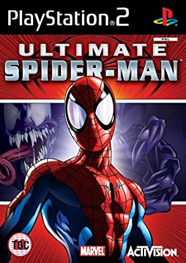

Ultimate Spider-Man
This article must comply with the non-Pokémon glitches guideline.
| Ultimate Spider-Man | |
|  | |
| Wikipedia link | {{{wikipedia}}} |
| Developer(s) | Treyarch, Beenox, Vicarious Visions |
| Publisher(s) | Activision |
| Platform(s) | PlayStation 2 / Xbox, GameCube / GBA, NDS |
| Release date(s) | September 19, 2005 (PlayStation 2, Xbox, GameCube, Game Boy Advance and Nintendo DS) |
Some parts of this article have not yet been fully reviewed by a member of this wiki's staff or QC team.
| |

|
Data from the Internet can be inaccurate or false, and it is easy to misremember information. For this reason there is more likely to be incorrect information in this article. This template will be removed once the information is peer-reviewed and tested by a staff or QC member. |
Ultimate Spider-Man is a 2005 action-adventure video game based on the comic book of the same name by Brian Michael Bendis and Mark Bagley, itself based on the Marvel Comics superhero Spider-Man. The game was released on most sixth generation consoles, including Game Boy Advance, GameCube, Microsoft Windows, PlayStation 2, Xbox and Nintendo DS.
It is the second open-world Spider-Man video game, after 2004's Spider-Man 2, and features a similar gameplay, allowing the players to freely explore Manhattan and parts of Queens, while stopping crimes and completing various other tasks and side missions. A unique gameplay feature, however, is the ability to play as Venom, who controls differently from Spider-Man and has his own series of side missions. The game's story is set in the universe of the Ultimate Spider-Man comic book series
Contents
If we go to an unavailable zone and we open the menu and change characters just when we let's go back, some things can happen:
If you switch from Spider-man to Venom: Venom will ascend to the sky, causing its icon on the map to lengthen to the point that it is not visible on the screen. When the character has reached the top, the camera will focus on the ground where the character had changed and an animation will appear, as if Venom had fallen into the water. Later, it will leave a river, as if it had really drowned.
If you switch from Vemon to Spider-man: As soon as you change your character, the screen will appear all of a colored background that depends on the place where you switched your character. You can do nothing here and you will have to reload an earlier game to get out of there. It is obvious to say that you do not have to save the game here. It is likely that it also has something to do with water since Spider-man releases dialogues as if he had fallen into the water, as can be heard in the video.
Apart from these main effects, there are others such that the costumes and characters on the menu will appear corrupt, as if they had been stretched, and with an animation as if approaching or moving away. As for the covers and photos of places, glitch seems to have no effect.
| |
Throw cars through the walls
In Ultimate Spider-man, it is very probable that any player who play with Venom, has thrown any car against a building and has ended up crossing it.
Regardless of which buildings are most likely to cross it, one of the areas where there is more probability is the tunnel in front of the Statue of Liberty. If you throw cars at a low angle, will go through the walls. The closer you launch the cars, the more likely they are to pass through the tunnel. As a curiosity, as there is water on the other side, sometimes it is heard as if the car fell into the water.
| |
Non-explosive cars
If you have the exact precision of making a vehicle bounce once off the ground and do it again on a wall or any object, the car will not explode and will stay in position until you launch it or move away from it.
| |
"Jumping" Glitch
If we jump (it doesn't matter if we are Spider-Man or Venom) and change the character to Venom/Spider-Man, there will be times the game takes almost a second to load the map textures. As a precaution, if you try this glitch a lot, the game could freeze, so make you sure having saved the game.
| |
Venom Falling Sprite's Curiosity
If we control Venom and we drop down a ramp and move the joystick in any direction, the Venom animation changes to the one it uses when walking, when it should use the generic one when it falls. When Venom hits the ground, he will simply fall to his feet.
The best place to try this is the Osborn Building.
| |
More research is needed for this article.
| |

|
Reason given: Article created without much content. |
External links
| This article or section is a stub. You can help Glitch City Wiki wiki by expanding it. |